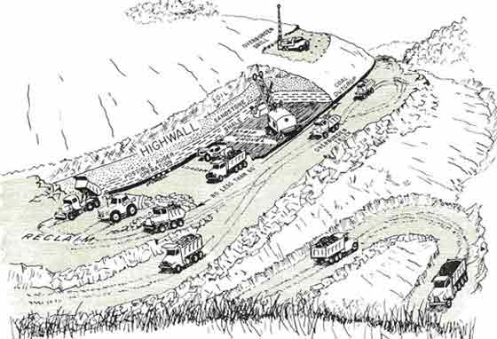
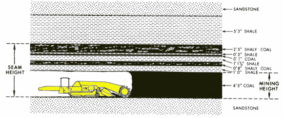

There are two basic mining methods: surface and underground. The amount of coal recovered and the impact
upon the property are both determined by which of these mining methods is
employed.
Surface Mining
In surface mining, the rock and soil above the coal (the overburden) is
drilled and blasted. Then, the broken overburden is stripped away, exposing
the top of the coal seam. Broken rock and debris are then cleaned away and
a loader breaks the coal from the seam and loads it onto trucks. After the
coal is removed, the overburden is replaced, and the land is reclaimed. All
of these steps can be seen in the illustration below.

Surface mining is best used for coal seams that are close to the surface. The thicker
the seam, the greater the thickness of overburden that can be economically
removed. As a general rule, about ten feet of overburden can be removed for
each foot of good coal in the seam. This means that for a five-foot-thick
coal seam, about 50 feet of overburden can be economically removed. If the
overburden is thicker, then underground mining must be used to recover the
coal. One of the greatest disadvantages of surface mining is that it completely
removes the landscape. A lot of effort and money must then be expended to
reclaim the land to a useful condition.
Underground Mining
When the coal seam is far below the surface, underground mining must be used.
Using this method, a shaft is drilled down to the coal and workers and equipment
are lowered down the shaft to work in the seam. The coal is removed by driving
tunnels with a machine known as a continuous miner. A continuous miner is
a vehicle with a large cutting drum mounted on a movable boom on the front
of the machine. The continuous miner is driven up against the coal seam, and
cutting bits on the rotating drum rip the coal from the seam. The boom is
moved up and down, and the drum cuts coal from the entire mining height of
the seam. A continuous miner is shown in the illustration below.

Underground mining works best in thick coal seams. When the coal seam is less than about
30 inches in thickness, it becomes very difficult for people and equipment
to operate in the mine. Most underground mines are less than 1000 feet below
the surface. When the coal is deeper, the expenses of sinking a shaft and
providing ventilation within the mine become unattractive. One of the greatest
disadvantages for underground mining is that the abandoned mines collapse
over time. This can lead to mine subsidence and damaged buildings, roads,
water wells, and utility services at the surface.
Recovery Rates
Surface mining and underground mining recover different amounts of coal. Because
surface mining exposes the seam for easy access, about 90% of the coal can
be recovered. The more restricted conditions of underground mining, combined
with a need to leave coal in the mine to support the roof, only allows about
50% of the coal to be recovered.
Images on this page are by the West Virginia Geological and Economic Survey.